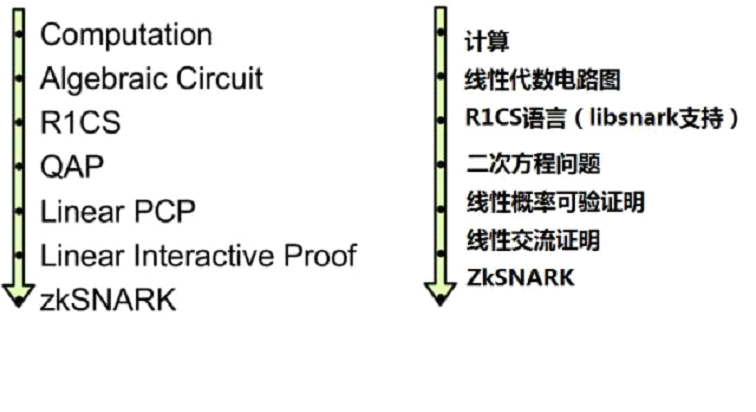

最新以太坊｜零知识证明专题系列报告（二）： 二次方程式算术的编程：从零到“灵”
作者：Vitalik Buterin
9 / 3 / 2017

最近，zk-SNARKs背后的技术引起了不少人的兴趣。越来越多的人想要去解开这一被誉为“月亮数学（因为它实在复杂得让人摸不着头脑）”的东西的神秘面纱。确实，掌握zk-SNARKs是一件极具挑战性的事情——因为它整合了方方面面的知识，并以这种整合的方式发挥作用。但是如果我们先把这个技术分解，然后再一点一点地去攻破，那么要理解它就容易得多了。
这篇文章并不是要全面地去介绍zk-SNARKs。我们假设你在阅读这篇文章已经具备以下条件：（i） 了解zk-SNARKs的基本概念及其作用，而且（ii）有足够的数学功底能理解诸如多项式的方程（比方说，对于P(x) + Q(x) = (P + Q)(x) ，其中P和Q是多项式。如果这条等式在你看来是显而易见的，那就可以认为你自己满足上述条件了）。事实上，这篇文章确实不仅要深入探讨该技术背后的运作机理，还要尽可能清楚地阐释实现零知识证明的思路的前半部分。zk-SNARK研究员Eran Tromer画出这个思路如下：
Eran Tromer’s explanation for zk-SNARK（Eran Tromer 对zk-SNARK的解释）
上述步骤能被分为两大部分。首先，zk-SNARKs不能被直接应用到任何计算性问题上。所以，为了计算这个问题，你必须将其转换到正确的“形式”上。这个形式我们称之为“二次方程算术编程”，简称（QAP）。要知道，函数代码的转换十分困难。在将函数代码转换到QAP的同时，另一个运算过程也在同时运行——在这个过程中，如果你拥有函数代码的输入，你就能创建一个相应的解（这个解有时也称为QAP的“目击者”）。在这之后，这个“目击者”需要经过一个相当复杂的过程来创建实际的“零知识证明”；此外，它还要经过一个独立的过程来验证其他人给你的证明。但这些内容已经超出本文讨论的范畴。
我们举一个简单的例子：证明你知道三次方程x3 + x + 5 == 35的解(提示：这个方程的解是x=3)。这个问题十分简单，因此它的QAP也还不足以让人心生恐惧，但重要的是，它足以帮助你理解QAP背后所有的运作机理。
让我们写出所需函数如下：
def qeval(x): // 定义函数qeval(x)y =x**3 // 令y为x的三次方
return x + y + 5 //返回x**3 + x + 5 （因为y= x**3 ）
我们使用的这个简单的基于特殊用途的编程语言不仅支持基础算术（(+, -, *, / ），还支持常数求幂运算（诸如x7的运算，但不支持xy）以及变量的分配。理论上，你可以通过这个编程语言进行任何计算（只要计算的步骤是有限的，这里并不支持无限循环）。需要注意的是，这里也不支持取模运算（%）和比较操作(<, >, ≤, ≥ )，因为在有限周期组算术中，并没有一个高效便捷的方法可以直接进行取模和比较操作（我们需要对此心怀感激；如果有人找到这个方法，那么椭圆曲线加密技术很快就会被破解）。
通过把因子分解（例如：13 = 23 + 22 + 1）并作为辅助输入，你可以把编程语言的功能扩展到取模和比较操作，并证明这些分解式的正确性以及在二进制电路中完成数学运算。在有限域算术中，也可以使用相等（= =）检查，实际上这个方式会更简单一些。但都不会涉及到这些细节。我们也可以通过将它们转换为算术形式y = 7 * (x < 5) + 9 * (x >= 5) 来扩展这个编程语言去支持条件语句(例如， if x < 5: y = 7; else: y = 9 )。 但也要注意，这个条件语句的“两条路径”都要被执行，并且如果你有很多条嵌套的条件语句，那么它将导致大量的计算。
现在，让我们一步一步地去讨论这个过程。如果你想自己去实现整个代码中的任意一部分，我在这里设置了一个编译器（仅供学习，还不能在真实的zk-SNARKs过程里实现QAPs!）。
“平展”
第一步是“平展”过程。在这个过程中我们将原始代码——它可能包含任意且复杂的陈述和表达方式——转换成有两种陈述形式的序列：x = y（其中，y可以是一个变量或者一个数字）和x = y (op) z （其中，op可以为+, -, *, / 运算符，并且y和z可以是变量，数字或者它们自己的子表达）。你可以将这些陈述想象成诸如电路中的逻辑门。对于上述代码来说，平展过程的结果如下：
sym_1 = x* x //令变量sym_1为x的平方y = sym_1 * x //令变量y为x**3（x的三次方）
sym_2 = y + x //令变量sym_2为x**3 + x
~out = sym_2 +5 //令变量~out为 x**3 + x + 5
（同样的结果和上述代码）
sym_1 = x* xy = sym_1 * x
sym_2 = y + x
~out = sym_2 +5
如果你看了原始代码和这里的代码，你会很轻松地发现两者相等。
R1CS语言的逻辑门
现在，我们将这个东西转换到第一等级约束系统(R1CS)。一个R1CS是一个由三个向量（a，b，c）组合而成的序列，并且R1CS的结果也是一个向量（s），其中s必须满足等式s . a * s . b - s . c =0，其中. 表示点积（“pot product”）——简单来说，如果我们把a和s“放在一起”,并在同一个位置把两者相乘，然后再对这些乘积求和。在这之后，再对b和s 以及c和s进行相同的操作。那么，最终你会发现，第三个结果等于前两个结果的乘积。例如，这就是一个满足条件的R1CS：

但是，相比只有一个约束条件，我们更倾向于使用多个约束条件：一个逻辑门对应一个约束条件。这里有一个根据操作类型 (+, -, * 或者/ )以及参数类型（变量或者数字）来将逻辑门转换成（a,b,c）向量组的标准方法。每个向量的长度等于系统中所有变量的总数。这些变量包括一个虚拟的变量~one， 它在第一个指针上表示数字1；这些是输入变量；也包括一个虚拟的变量~out ，表示为输出，剩下的就是所有的中间变量（上述的变量sym1和变量sym2）；这些向量通常分布的非常稀疏，它们只填充被特定逻辑门影响的变量的位置。
首先，这里先提供我们即将要使用的变量映射：
'~one','x', '~out', 'sym_1', 'y', 'sym_2'
这个结果向量将包含这个项目中所有的变量，并按一定顺序排列。现在，我们将给出第一个门的三重向量（a，b，c）：
a = [0,1, 0, 0, 0, 0] //对x**x = sym-1的转换b = [0, 1, 0,0, 0, 0]
c = [0, 0, 0,1, 0, 0]
你可以看见，如果这个解向量第二个位置包含3，并且第四个位置包含9，那么无论这个解向量的其他项是什么，点积检查都将归结为3* 3 = 9，所以它将通过。如果这个解向量第二个位置包含-3，并且第四个位置包含9，那么它也会通过。事实上，如果这个解向量第二个位置包含7，并且第四个位置包含49，，那么点积计算后依旧会通过——第一次检查仅仅是为了验证第一个门的输入和输出的一致性。
现在，我们来看看第二个门：
a = [0,0, 0, 1, 0, 0] //对sym-1 *x = y 的转换b = [0, 1, 0,0, 0, 0]
c = [0, 0, 0,0, 1, 0]
用第一次点积检查的方法，我们检查到sym_1 * x = y.
In a similar style to the first dot productcheck, here we’re checking that sym_1 * x = y.
现在，第三个门：
a = [0,1, 0, 0, 1, 0] //对y + x =sym-2的转换，模式和上面不同b = [1,0, 0, 0, 0, 0]
c = [0, 0, 0,0, 0, 1]
这里，这个模式有一点点不同：它是解向量中的第一个元素乘以第二个元素，然后再乘以第五个元素，再加上这两个结果，最后检查所得的和是否等于第六个元素。因为解向量中的第一个元素总是为1，这个过程仅仅是一个额外的检查——为了检查输出是否等于两个输入的和。
最后，这是第四个门：
a = [5,0, 0, 0, 0, 1] //对sym_2 + 5= ~out 转换b = [1, 0, 0,0, 0, 0]
c = [0, 0, 1,0, 0, 0]
这里，我们求出最后一个检查的值，~out = sym_2 + 5。这个点积检查通过把解向量的第六个元素加上5倍第一个元素（提醒：因为第一个元素是1，所以我们可以认为是加上5），然后用第三个元素（就是我们存储输出变量的位置）来对它进行检查。
然后，我们产生了满足四个约束条件的R1CS。这个目击者简单来说就是对所有变量（包括输入，输出，和中间变量）进行分配：
[1, 3,35, 9, 27, 30] //即这个例子中的s向量你自己可以通过简单执行上述平展代码来进行计算——当你计算的时候，首先将输入变量分配为x=3，并提交所有中间变量以及输出变量的值。
完整的R1CS放在一起就是这样： // 部分总结在附录可见
A[0, 1, 0, 0,0, 0]
[0, 0, 0, 1,0, 0]
[0, 1, 0, 0,1, 0]
[5, 0, 0, 0,0, 1]
B
[0, 1, 0, 0,0, 0]
[0, 1, 0, 0,0, 0]
[1, 0, 0, 0,0, 0]
[1, 0, 0, 0,0, 0]
C
[0, 0, 0, 1,0, 0]
[0, 0, 0, 0,1, 0]
[0, 0, 0, 0,0, 1]
[0, 0, 1, 0,0, 0]
R1CS应用到QAP
下一步我们要提取这个R1CS并把它转换成QAP形式——QAP所使用的逻辑完全相同，除了把点积换成了多项式。我们按照下面步骤执行。我们从四个长度为6的三个向量的组合过渡到六组三阶-三项多项式，其中，在一个x坐标上对多项式赋值表示一个约束。这样的话，如果我们在x=1给多项式赋值，那么我们就得到第一组向量，如果我们在x=2给多项式赋值，那么我们就得到第二个向量的集合，依此类推。
我们可以使用一个我们称之为拉格朗日插值（“Lagrange interpolation”）的工具去实现转换。拉格朗日插值解决了一个问题：如果你有一组点（例如：在(x, y)坐标系内的点），那么对这些点上使用拉格朗日插值将产生一个通过所有这些点的多项式。我们通过对问题进行分解来实现这个功能：对于每一个x坐标，我们创建一个对该x坐标y的坐标是我们所需的值以及对其它x坐标y的坐标均为0的多项式。
让我们看一个例子。假设我们想要一个通过点（1，3），（2，2）和 （3，4）的多项式。我们首先创造一个通过点（1，3），（2，0）和 （3，0）的多项式。如图所示，创造一个在x=1，y不等于0和x在其他点，y 等于 0的多项式非常简单。我们只要计算：
(x - 2) *(x - 3)
它看起来就像这样：

现在，我们只需要重新调节它，使它的高度在x=1是正确的：
(x - 2) *(x - 3) * 3 / ((1 - 2) * (1 - 3))得：
1.5 *x**2 - 7.5 * x + 9

然后我们对其他的两个点进行相同的处理，我们应该能得到两个看上去类似的多项式，除了他们y不为0的值是在x=2和x=3而不是x=1。我们将三个多项式相加得到：
1.5 * x**2 - 5.5 * x + 7

在这个坐标系中的图就是我们想得到的结果。上述算法需要进行O（n3）次——因为有n个点，而且每个点都需要进行O（n2）次把多项式相乘。先小小的假设这个过程能简化到O（n2）次；再进一步假设，使用快速傅里叶变换法则或其它类似的方法，它甚至能被再进一步简化——这是一个相当重要的优化。尤其是在实际中，zk-SNARKs中使用的函数有上千个门，这时优化的作用显而易见。
现在，让我们用拉格朗日插值来转换我们的R1CS。我们要做的是取出每一个向量的第一个值，并基于此使用拉格朗日插值来创造一个多项式（其中，你可以通过在i点给多项式赋值来得到第i个向量的第一个值）。对每一个b和c向量中的第一个值重复这个过程，然后对a，b，c向量中的第二个，第三个值等重复这个过程。为了方便，我现在将提供这个答案：
A向量的多项式 // A向量第一和第二个多项式计算步骤在附录
[-5.0, 9.166,-5.0, 0.833][8.0, -11.333,5.0, -0.666]
[0.0, 0.0,0.0, 0.0]
[-6.0, 9.5,-4.0, 0.5]
[4.0, -7.0,3.5, -0.5]
[-1.0, 1.833,-1.0, 0.166]
B向量的多项式
[3.0, -5.166,2.5, -0.333][-2.0, 5.166,-2.5, 0.333]
[0.0, 0.0,0.0, 0.0]
[0.0, 0.0,0.0, 0.0]
[0.0, 0.0,0.0, 0.0]
[0.0, 0.0,0.0, 0.0]
C向量的多项式
[0.0, 0.0,0.0, 0.0][0.0, 0.0,0.0, 0.0]
[-1.0, 1.833,-1.0, 0.166]
[4.0, -4.333,1.5, -0.166]
[-6.0, 9.5,-4.0, 0.5]
[4.0, -7.0,3.5, -0.5]
这些系数是根据x的幂次阶数以上升顺序排列的。所以上述的第一个多项式其实就是0.833 * x3 - 5.0*x2+ 9.166*x – 5 。这个多项式的集合（加上一个Z多项式，后面我会解释什么是Z多项式）构成了这个特定QAP例子中的参数。需要注意的是，直到这里，对于每一个你想要用zk-SNARKs去验证的函数，所有这些运算只能进行一次。一旦QAP参数被产生，他们就能被重复使用。
让我们尝试在x=1给所有的多项式赋值。在x=1给一个多项式赋值，简单的来说就相当于把所有的系数相加起来（因为，对所有的k，都有1k=1），所以这并不难。
我们得到：
A在x=1的结果
01
0
0
0
0
B在x=1的结果
01
0
0
0
0
C在x=1的结果
00
0
1
0
0
检查QAP
现在，你可能想问，这一疯狂转换的重点到底是什么？这个重点就是我们可以通过在多项式上进行点积检查来同时检查所有的约束条件，而不必逐个检查R1CS中的约束条件。

因为在本例中，点积计算就是多项式之间一系列的乘法和加法运算，它本身的结果也会是一个多项式。如果这个结果多项式（我们通过在一个x坐标上对其进行赋值来表示一个逻辑门）等于0，那么就表示检查结果正确；如果这个我们至少在一个x坐标上对其进行赋值来表示一个逻辑门的结果多项式是一个非零值，那就表示逻辑门的输入和输出是不一致的(例如，这个逻辑门为： y = x * sym_1 但是提供的值可能为 x = 2，sym_1 = 2和y = 5)。
注意，这个结果多项式本身并非一定要等于0，事实上它在很多情况下都不为0。它有可能在一些点上不对应于任何的逻辑门的功能，它只要在与某些逻辑门相对应的点上结果为零即可。要检查它的正确性，我们并非真的在与逻辑门相对应的点上给这个多项式t = A . s * B . s - C .s 赋值。相反，我们把t这个多项式分解成另一个多项式Z，并检查Z是否整除t ——也就是说，这个 t/ Z 的除法余数应该是为0的。
Z被定义为(x- 1) * (x - 2) * (x - 3) ... ——这个最简单的多项式在任意对应逻辑门的点上都应该等于0。有一个非常重要的代数定理——任何在所有这些点上结果都为0的多项式一定是最小多项式（“minimal polynomial”）的倍数，并且如果一个多项式是Z的倍数那么它在任意点的赋值都应该为0；这个等式让我们的工作变的更加容易。
现在，让我们就上述多项式进行点积检查。首先，中间的多项式为：
A . s =[43.0, -73.333, 38.5, -5.166]B . s = [-3.0,10.333, -5.0, 0.666]
C . s = [-41.0,71.666, -24.5, 2.833]
现在, A . s * B . s - C . s为：
t =[-88.0, 592.666, -1063.777, 805.833, -294.777, 51.5, -3.444]
现在，这个最小多项式为： Z= (x - 1) * (x - 2) * (x - 3) * (x - 4)
Z = [24,-50, 35, -10, 1]
如果我们现在把这个结果除以Z得到：
h = t / Z= [-3.666, 17.055, -3.444]
它没有余数。
所以，我们现在有一个QAP的解决方案。如果我们想要去伪造R1CS的解（我们从这个解得到QAP的解）中的任意变量——换句话说，将最后一个变量设置成31而不是30，那么我们会发现这个t多项式无法通过其中一项检查（在这种情况下，在x=3得到的值应该为-1，而不是0）。进一步说，t也不是Z的倍数。因此，t / Z会得到余数[-5.0,8.833, -4.5, 0.666]。需要注意的是，上述过程只是一个简单化的步骤。“在真实的世界中”，加、减、乘、除操作的对象并不是规则的数字，而是有限域的元素——满足自身一致性的一种奇怪算术。所以，所有我们知道和喜欢的算术法则依然是正确的，但是这里面所有的答案都是一些有限集合的元素，它们通常都是对于某个n，范围从0到n-1的整数。例如，如果n=13，那么1 / 2 = 7 (和 7 * 2 = 1)， 3 * 5 = 2，依此类推。使用有限域算术我们不再需要担心四舍五入所产生的误差，而且系统能更好地兼容椭圆曲线——这对于设计保证zk-SNARK协议的安全性的zk-SNARK余下的部分非常重要。
特别感谢Eran Tromer给我讲解了很多zk-SNARKs的内部机制的细节。
原文链接：https://medium.com/@VitalikButerin/quadratic-arithmetic-programs-from-zero-to-hero-f6d558cea649